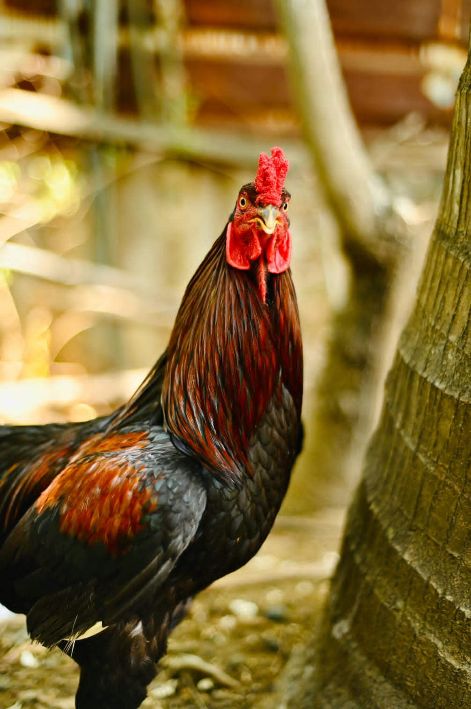

Élevage

Élevage de volailles bio pour des produits frais et nutritifs.
Nos poulets, pintades et canards sont élevés dans le respect du bien-être animal et de l’environnement.
Nos poulets, pintades et canards sont élevés dans le respect du bien-être animal et de l’environnement.